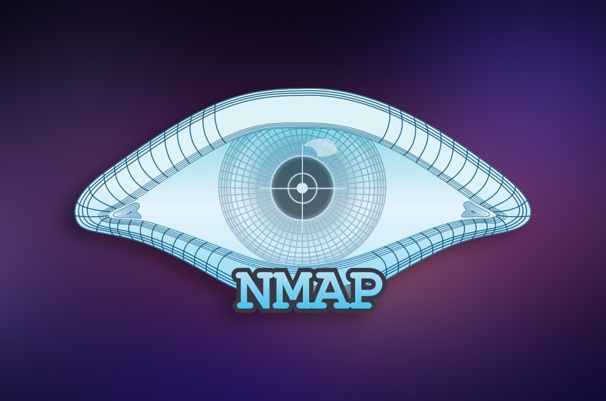
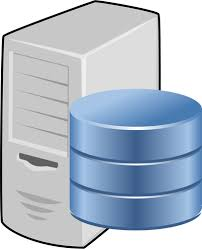
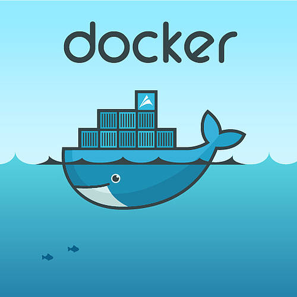
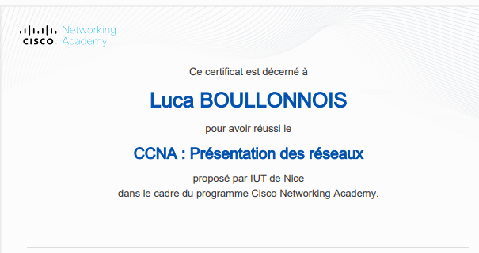
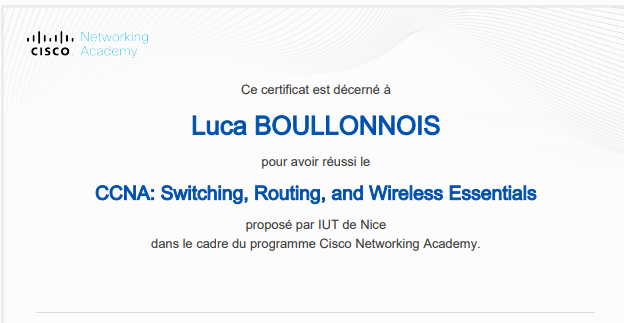

Mes Compétences
Vous trouverez ici l'ensemble des compétences et certifications que j'ai pu acquérir au cours de ma formation.
Cybersécurité
Audit
- Identification et analyse de failles critiques sur systèmes et réseaux.
- Simulation d'attaques, exploitation de failles et préconisations de remédiation.
- Investigation de trames et diagnostic de sécurité réseau via Wireshark.

Analyse
- Analyse de vulnérabilités et audits de sécurité.
- Utilisation d'outils de scan (Nmap).
- Analyse de trames et capture réseau.
Sécurité Infrastructure
- Sécurisation d'infrastructures : Pare-feu, VPN, DMZ.
- Gestion des accès et protocoles d'authentification.
- Mise en place de solutions de chiffrement.
Réseaux & Télécoms

Routage & Commutation
- Configuration de réseaux locaux (LAN, VLAN).
- Mise en place de routage statique et dynamique.
- Maîtrise du protocole OSPF.

Services Réseaux
- Déploiement de services réseau (DHCP, DNS, NAT).
- Mise en place et configuration de serveurs Web.
- Filtrage et sécurisation des accès réseau.
Télécommunications
- Principes de propagation des ondes et supports physiques (Fibre, Cuivre).
- Échantillonnage, quantification et codage des signaux.
- Utilisation d'analyseurs de spectre et mesure de qualité de signal.
Systèmes & Virtualisation

Administration Linux
- Gestion des utilisateurs et des droits d'accès.
- Sécurisation de base des systèmes d'exploitation.
- Automatisation de tâches via scripts Bash.

Windows Active directory
- Gestion des utilisateurs, groupes et unités d'organisation (OU).
- Mise en place de stratégies de groupe et configurations centralisées.
- Déploiement de contrôleurs de domaine (AD DS) et DNS.
- Gestion des permissions et délégation de contrôle.

Virtualisation & Conteneurs
- Déploiement de machines virtuelles (VirtualBox).
- Conteneurisation d'applications avec Docker.
- Gestion d'environnements isolés via Docker Compose.
Développement & Scripting
Développement Web
- Bases de développement web pour la création de services.
- Utilisation de PHP pour la dynamique côté serveur.
- Création et gestion de bases de données (SQL).

Scripting & Apps Réseau
- Programmation orientée réseau (Python).
- Développement de solutions pour la détection de vulnérabilités.
- Création d'applications communicantes pour le pilotage d'équipements.
Powershell
- Création de scripts pour l'automatisation de tâches système.
- Gestion des utilisateurs et dossiers via fichiers CSV.
- Analyse de logs et vérification de l'intégrité du système.
Gestion de Projet

Gestion de projet
- Travail collaboratif en mode projet et gestion d’équipe.
- Application de la méthodologie SMART.
- Suivi de l'avancement et respect des délais.
Documentation & Support
- Rédaction de documentation technique exhaustive.
- Création de rapports et de cahiers des charges.
- Conduite de tests, diagnostic et résolution d’incidents.
Certifications

Certification CCNA 1
- Introduction to Networks : Compréhension architectures.
- Configuration de base des routeurs et commutateurs.
- Maîtrise de l'adressage IPv4 et IPv6.

Certification CCNA 2
- Switching, Routing, Wireless: Technologies (VLANs, STP).
- Configuration avancée du routage statique et dynamique.
- Sécurisation des réseaux locaux et sans fil (WLAN).